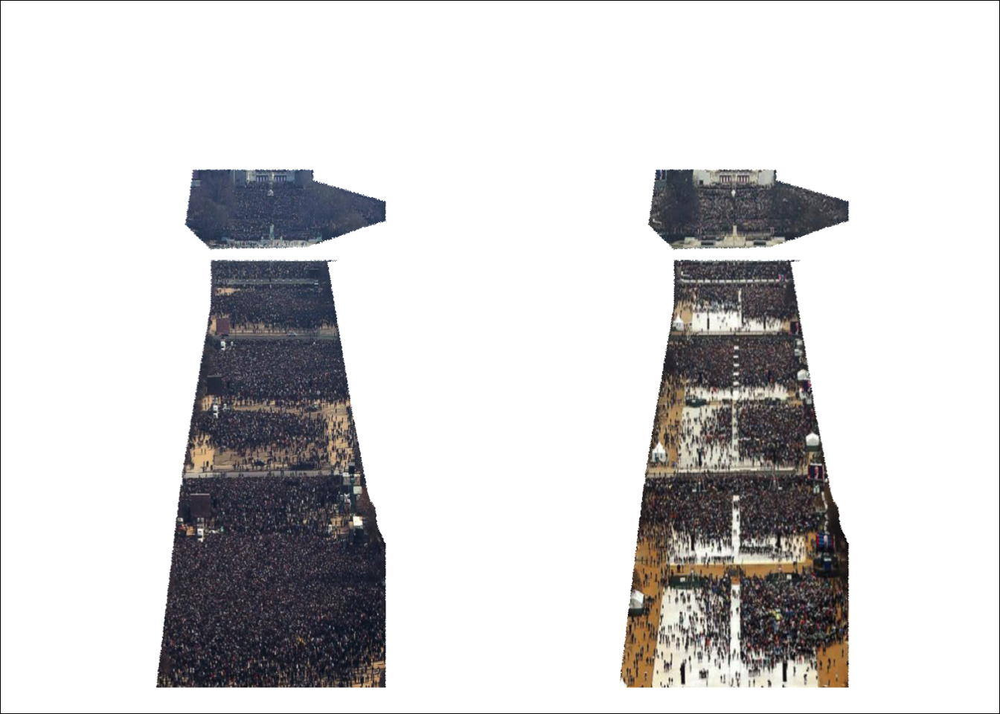

Inauguration Overlap
John Muschelli
1/23/2017
There has been much discussion about to count crowds is tricky. I wanted to try to see if we could simply quantify how much more coverage of the Mall was there during Obama’s inauguration compared to Trump’s. I don’t have any data about the counts and I wanted to look at images that were already online.
Data Online
I looked online and found a few links comparing the two pictures 1, 2, 3, 4, and 5. While many had some good angles from the Capitol looking out onto the Mall, I wanted to look at it from the Washington Monument. I wanted to see if there were more poeple “where I’d be” (in the back). I ended up using the images from ABC as it tried to put the times on the images (Obama picture was at 11AM and Trump picture was at 12PM).
I saw the slider on the Guardian and although I liked the comparison, it wasn’t as pleasing as I’d want. Looking at the 2 images, I feel as though there is a better comparison after you align the images. So that’s what I did.
Processing the Data
I manually resized the images to the same size in Photoshop. I know this is not reproducible, but I created a canvas the same size as the picture from the Obama inauguration because I was going to try to register the one from Trump as the Obama one had better resolution. I used R for the rest of the analysis.
I used the png and jpeg packages to read and write images. I used the RNiftyReg package to do the registration. Although RNiftyReg has non-linear registrations, we chose an affine registration, which can scale the Trump image to match the size of the Obama image.
Making Black and White Images
library(jpeg)
obama_stub = "abc_obama.jpg"
obama = readJPEG(obama_stub)
trump_stub = "abc_trump_resized_black.jpg"
trump = readJPEG(trump_stub)The images we have are colored and I want to register only based on the shapes and not the colors of the pixels in the image. I made a black and white image by taking the mean value over the red, green, and blue channels. We will also change black areas to NA for missing so that these do not go into the registration. Although some areas are very dark, almost all are not truly black and the only black is in the image from Trump campaign so that we can inflate the image when matching.
make_bw = function(x){
x = x[,, 1:3] # take 3 channels
x = as(x, "array") # ensure it's an array
bw = apply(x, 1:2, mean)
img_no_zero = bw
img_no_zero[img_no_zero == 0] = NA
L = list(img = x, bw = bw, img_no_zero = img_no_zero)
return(L)
}
obama = make_bw(obama)
trump = make_bw(trump)Image Registration
Here we will calculate an affine transformation for the Trump image to the Obama image. I will use the images where black areas have been set to missing:
library(RNiftyReg)
affine = niftyreg(
source = trump$img_no_zero,
target = obama$img_no_zero)Let’s apply the transformation to the black-and-white Trump image to see how it looks.
trans = forward(affine)
reg_trump = trump
reg_trump$bw = applyTransform(reg_trump$bw, transform = trans)
reg_trump$img_no_zero = applyTransform(reg_trump$img_no_zero, transform = trans)Note, however, the output of applyTransform is a niftiImage, and most of the functions we are using require the images to be in arrays. Therefore, we have to coerce these to arrays. The RNifti package has not at this time overloaded the as.array operator, so we have to use as(img, "array") functionality:
reg_trump = lapply(reg_trump, as, "array")Now, after the transformation, depending on how you do it, the values may lie outside of 0 and 1, which are not valid numbers for these images. Here we make a function to set them to 0 or 1, respectively, if they fall outside the range and apply it to the list.
window_img = function(x) {
x[ x > 1 & !is.na(x)] = 1
x[ x < 0 & !is.na(x)] = 0
return(x)
}
reg_trump = lapply(reg_trump, window_img)Now we can create a little plotter function that will make these into rastered images.
plotter = function(img) {
oldpar <- par(no.readonly = TRUE)
oma = c(0, 0, 0, 0)
mar = rep(0, 4)
par(oma = oma, mar = mar)
on.exit({
par(oldpar)
})
dimg = dim(img)
dimg = dimg/max(dimg)
r = as.raster(img)
plot(seq(0, dimg[1], by = dimg[1]),
seq(0, dimg[2], by = dimg[2]), type = "n",
xaxt = "n", yaxt = "n",
xlab = "",
ylab = "")
rasterImage(r, 0, 0, dimg[1], dimg[2])
}Let’s plot the registered black-and-white image:
plotter(reg_trump$bw)And compare both images side-by-side, now registered:
par(mfrow = c(2,2))
plotter(obama$bw)plotter(reg_trump$bw)par(mfrow = c(1,1))Plotting the color images
As we did a registration from a matrix to another matrix, that’s what the transformation assumes. As the color image is 3 channels, we are going to write a little function to apply the transformation to each channel separately.
reg_3d = function(x) {
arr = array(dim = dim(obama$img))
for (i in 1:3) {
y = applyTransform(x[,,i], transform = forward(affine))
y = as(y, "array")
arr[,,i] = y
}
arr = window_img(arr)
return(arr)
}
reg_trump$img = reg_3d(reg_trump$img)Now we can plot the color images side by side:
plot2 = function(img1, img2) {
oldpar <- par(no.readonly = TRUE)
oma = c(0, 0, 0, 0)
mar = rep(0, 4)
par(oma = oma, mar = mar)
on.exit({
par(oldpar)
})
stopifnot(all(dim(img1) == dim(img2)))
dimg = dim(img1)
dimg = dimg/max(dimg)
r1 = as.raster(img1)
r2 = as.raster(img2)
plot(x = seq(0, dimg[1]*2, by = dimg[1]),
y = seq(0, dimg[2], by = dimg[2]/2), type = "n",
xaxt = "n", yaxt = "n",
xlab = "",
ylab = "")
rasterImage(r1, 0, 0, dimg[1], dimg[2])
rasterImage(r2, dimg[1], 0, dimg[1]*2, dimg[2])
}
plot2(reg_trump$img, obama$img)We see that although they line up well, there is still a large black box around the Trump picture as it was more zoomed it. Let’s crop the image so that we remove this area from the Trump and Obama images. Here we keep rows that have more 5% of their pixels as non-black (technically very dark: intensity 0.01):
keep_cols = colMeans(reg_trump$bw < 0.01) < 0.95
keep_rows = rowMeans(reg_trump$bw < 0.01) < 0.95
crop_img = function(x) {
if (length(dim(x)) == 2) {
return(x[keep_rows, keep_cols])
} else {
return(x[keep_rows, keep_cols,])
}
}
obama_crop = lapply(obama, crop_img)
trump_crop = lapply(reg_trump, crop_img)Here we view the result:
plot2(trump_crop$img, obama_crop$img)Much better.
Although this is a bit more satisfying of a picture as they line up a bit better, let’s try to have them overlay a bit. Here we will write out the Obama and Trump images out as pngs.
library(png)
tname = "trump_crop.png"
writePNG(trump_crop$img, target = tname)
oname = "obama_crop.png"
writePNG(obama_crop$img, target = oname)We will then use the ImageMagick function convert, called through system, to create a GIF that has smooth fading. The animation package can also perform this operation. I put the Trump and Obama images twice because I wanted it to rest there a bit longer and put the Trump image again to smooth the transition back.
out_gif = "overlay.gif"
cmd = sprintf("convert -morph 20 %s %s %s %s %s %s", tname, tname,
oname, oname, tname, out_gif)
system(cmd)
We could have also resized the image if we wanted using the -resize flag.
cmd = paste("convert -morph 20 -resize 50%",
tname, tname, oname, oname, tname, out_gif)Just the Crowds
I created a very coarse mask of the crowds (again in Photoshop) for the Obama image and will use it to mask out the crowds. We will set all areas not in the mask to NA and remove them. For images with color, we have to set those colors to something, and we make them simply white here.
mask = readPNG("abc_obama_mask.png")
mask[ mask < 1] = NA
crop_mask = crop_img(mask)
mask_img = function(img, mask){
if (length(dim(img)) == 2) {
img = img * mask
} else {
for (i in 1:3) {
img[,,i] = img[,,i] * mask
}
img[is.na(img)] = 1
}
return(img)
}
obama_crop_mask = lapply(obama_crop, mask_img, crop_mask)
trump_crop_mask = lapply(trump_crop, mask_img, crop_mask)
plot2(obama_crop_mask$bw, trump_crop_mask$bw)plot2(obama_crop_mask$img, trump_crop_mask$img)
Some Analysis
Let’s do a difference image of the crowds on the black and white images. One of the issues, though is that these then map values to -1 to 1. Here we will map them back into 0 to 1 using a simple transformation. Darker regions indicate darker regions, a coarse surrogate for more dense population for Obama. Lighter regions are for Trump.
diff = obama_crop_mask$bw - trump_crop_mask$bw
diff = (diff + 1) / 2
plotter(diff)We can do a simple logical test to see if Obama’s image is more dense (darker, lower intensity) than that of Trump. Although values of 1 are mapped to white, we are setting it so that dark on this plot means darker regions for Obama’s picture:
binary = obama_crop_mask$bw > trump_crop_mask$bw
binary = mask_img(binary, crop_mask)
plotter(binary)
Let’s take a simple mean to get the percentage of darker pixels for Obama compared to Trump. Again, we must invert this so as the white above meant 1. Because it was masked, areas outside of the crowd mask are set to missing and will not be used in the calculation.
1 - mean(binary, na.rm = TRUE)## [1] 0.6169145We see that the image from Obama is 12% darker than that of Trump.
Image Normalization
What if the Obama image was just darker because of the lense or the clowds? We can try to normalize the image using the following equation:
\[ (x - \min) / (\max - \min) \] so that the maximum value of the image is set to \(1\) and the min set to \(0\) by definition.
Let’s run the same comparison:
max_norm = function(x) {
r = range(x, na.rm = TRUE)
(x - r[1]) / (r[2] - r[1])
}
binary = max_norm(obama_crop_mask$bw) > max_norm(trump_crop_mask$bw)
binary = mask_img(binary, crop_mask)
plotter(binary)And calculate the same measure:
1 - mean(binary, na.rm = TRUE)## [1] 0.6898546We see that the image from Obama is 19% darker than that of Trump.
Over a Certain Value
We do not explictly care about if Obama’s image is darker than Trump’s. We care if they are over an intensity threshold compared to the other so that there are people in one image but not the other. Let’s say below an intensity of 0.25 is “dark” and see how they compare.
obama_low_intensity = obama_crop_mask$bw < 0.25
trump_low_intensity = trump_crop_mask$bw < 0.25
plot2(obama_low_intensity, trump_low_intensity)We can then make the binary image represent when Obama’s image is below a threshold but Trump’s is not. We’ll use the same convention that darker on this image means “more people” in Obama’s picture:
binary = obama_low_intensity < trump_low_intensity
binary = mask_img(binary, crop_mask)
plotter(binary)And again let’s see how much more low intensity pixels Obama has compared to Trump:
mean(obama_low_intensity & !trump_low_intensity, na.rm = TRUE)## [1] 0.2558768Normalize and re-run
Let’s normalize and try again:
obama_low_intensity = max_norm(obama_crop_mask$bw) < 0.25
trump_low_intensity = max_norm(trump_crop_mask$bw) < 0.25
binary = obama_low_intensity < trump_low_intensity
binary = mask_img(binary, crop_mask)
plotter(binary)And again let’s see how much more low intensity pixels Obama has compared to Trump:
mean(obama_low_intensity & !trump_low_intensity, na.rm = TRUE)## [1] 0.3444206Conclusion
If you’re at the back, you had much more space at Trump’s inauguration compared to Obama’s. Thanks Obama.